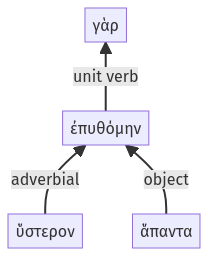

Lysias, Oration 1, 1.12.1-1.12.4a
1.11.29-1.11.33a | 1.12.5-1.12.19a
Sentence 24
1.12.1-1.12.4a
ὕστερον γὰρ ἅπαντα ἐπυθόμην.
1 ὕστερον ἅπαντα ἐπυθόμην
ὕστερον γὰρ ἅπαντα ἐπυθόμην.
Highlighting:
- connecting words
- unit verb
- subject
- object
Color code:
- independent clause (level 1, transitive verb)
